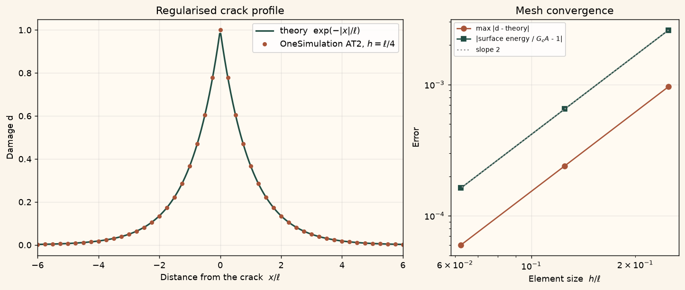

Docs › Examples › Phase-field crack profile (AT2)
Fracture · 1D
Phase-field crack profile (AT2)
A fully broken point in a bar regularised by the AT2 phase field, graded against the exponential crack profile.

What it computes
OneSimulation solves the AT2 phase-field fracture equilibrium on a line with an irreversibly damaged centre node.
What it checks
The damage profile exp(-|x|/l) and the regularised surface energy G_c A match within about 0.02 %, converging as h^2.
The notebook
The complete notebook, cell by cell. Run it to produce the figures and the comparison printout.
In phase-field fracture a sharp crack is replaced by a smooth damage field \(d\in[0,1]\) (\(d=1\) fully broken). The AT2 model regularises the crack surface energy \(G_c\,A\) of a bar with cross-section \(A\) as
where \(\ell\) is the regularisation length. A bar is fully broken at its centre (\(d=1\) there) and is otherwise unloaded, so the damage field simply minimises \(\Psi_c\) with that constraint. OneSimulation's PhaseFieldFracture solves the coupled displacement/damage problem on a line mesh with irreversible (non-healing) damage; the broken centre node is imposed through the initial damage and is held by the irreversibility constraint.
Reference. On a bar of half-length \(a\gg\ell\) the minimiser of \(\Psi_c\) with \(d(0)=1\) is the exponential profile
i.e. the regularised functional recovers exactly the Griffith surface energy of one crack. (With intact ends \(d(\pm a)=0\) the finite-bar solution is \(\sinh((a-|x|)/\ell)/\sinh(a/\ell)\), which differs from the exponential by \(O(e^{-2a/\ell})\) — here below \(10^{-8}\).) We check the profile and the surface energy under mesh refinement.
from importlib.metadata import version
import numpy as np
import matplotlib.pyplot as plt
from onesim.cad.d1 import Line
from onesim.meshing import StructuredLineMesher
from onesim.physics.solid_mechanics import PhaseFieldFracture
print("OneSimulation:", version("onesimulation"))Parameters and model
A brittle glass bar, 10 mm long with a 1 mm x 1 mm cross-section. The regularisation length is 0.5 mm, so each half of the bar spans \(10\,\ell\).
length = 0.010 # m, bar length
side = 0.001 # m, square cross-section edge
E, nu = 70e9, 0.22 # Pa, - soda-lime glass
G_c = 10.0 # J/m^2, critical energy release rate
ell = 0.0005 # m, phase-field regularisation length
area = side * side
centre = 0.5 * length
half = 0.5 * length
print(f"a / l = {half/ell:.0f}, exp(-2a/l) = {np.exp(-2*half/ell):.1e}")
geometry = Line(start=(0.0, 0.0, 0.0), end=(length, 0.0, 0.0))
model = PhaseFieldFracture(youngs_modulus=E, poisson_ratio=nu, fracture_energy=G_c,
length_scale=ell, cross_section=area)
def broken_centre(x):
"""Initial damage: the centre node is fully broken, everything else intact."""
return np.isclose(x, centre).astype(float)
# Boundary conditions on both ends: axially clamped (no load, so the elastic
# energy stays zero) and intact, d = 0. The single quasistatic state at t = 0
# is the equilibrium damage field.
def solve(cells):
mesh = StructuredLineMesher(cells=cells).generate(geometry)
return model.solve(
mesh=mesh,
times=(0.0,),
displacements=(
(geometry.boundaries.start, "x", 0.0),
(geometry.boundaries.end, "x", 0.0),
),
prescribed_damage=(
(geometry.boundaries.start, 0.0),
(geometry.boundaries.end, 0.0),
),
initial_damage=broken_centre,
)Comparison with the exponential profile and the Griffith energy
Three meshes with element sizes \(\ell/4\), \(\ell/8\) and \(\ell/16\). An even number of cells puts a node exactly at the centre.
def reference_profile(x):
return np.exp(-np.abs(x - centre) / ell)
results, profile_errors, energy_errors = {}, [], []
print("cells h/l max|d - exp(-|x|/l)| surface energy / (G_c A)")
for cells in (80, 160, 320):
result = solve(cells)
x = result.coordinates[:, 0]
damage = result.damage[0]
profile_errors.append(float(np.max(np.abs(damage - reference_profile(x)))))
energy_errors.append(abs(float(result.fracture_energy[0]) / (G_c * area) - 1.0))
results[cells] = (x, damage)
print(f"{cells:5d} {length/cells/ell:5.3f} {profile_errors[-1]:12.2e} {result.fracture_energy[0]/(G_c*area):.5f}")
# Unloaded bar: no elastic energy, no reactions, closed energy balance.
# Symmetry of the profile about the broken node on the finest mesh.
x, damage = results[320]
# Crack width: the damage drops to 1/e one regularisation length away from the crack.
right = x >= centre
x_1e = np.interp(np.exp(-1.0), damage[right][::-1], x[right][::-1]) - centre
print(f"Distance at which d = 1/e: {x_1e*1e3:.4f} mm (l = {ell*1e3:.4f} mm)")Figure
cream = "#fbf5eb"
fig, (ax_profile, ax_conv) = plt.subplots(1, 2, figsize=(11, 4.6), constrained_layout=True,
gridspec_kw={"width_ratios": (1.6, 1.0)})
fig.patch.set_facecolor(cream)
for ax in (ax_profile, ax_conv):
ax.set_facecolor("#fffaf2")
ax.grid(alpha=0.25)
x_fine = np.linspace(0.0, length, 600)
ax_profile.plot((x_fine - centre) / ell, reference_profile(x_fine), color="#214D43", lw=1.8,
label="theory $\\exp(-|x|/\\ell)$")
x80, d80 = results[80]
ax_profile.plot((x80 - centre) / ell, d80, "o", color="#A85539", ms=4, label="OneSimulation AT2, $h=\\ell/4$")
ax_profile.set(xlabel="Distance from the crack $x/\\ell$", ylabel="Damage d", xlim=(-6, 6),
title="Regularised crack profile")
ax_profile.legend(loc="upper right")
sizes = np.array([length / c / ell for c in results])
ax_conv.loglog(sizes, profile_errors, "o-", color="#A85539", label="max |d - theory|")
ax_conv.loglog(sizes, energy_errors, "s-", color="#214D43", label="|surface energy / $G_c A$ - 1|")
ax_conv.loglog(sizes, energy_errors[-1] * (sizes / sizes[-1]) ** 2, ":", color="#999", label="slope 2")
ax_conv.set(xlabel="Element size $h/\\ell$", ylabel="Error", title="Mesh convergence")
ax_conv.legend(loc="upper left", fontsize=8)
plt.show()Going further
Shorten the bar until \(a/\ell\) is only 2 or 3 and compare with the finite-bar profile \(\sinh((a-|x|)/\ell)/\sinh(a/\ell)\) instead. Replace the broken centre by a displacement ramp on one end (displacements=(..., (end, "x", lambda t: t*u_max))) to watch the homogeneous AT2 damage grow with the applied strain and the reaction force pass through its peak.